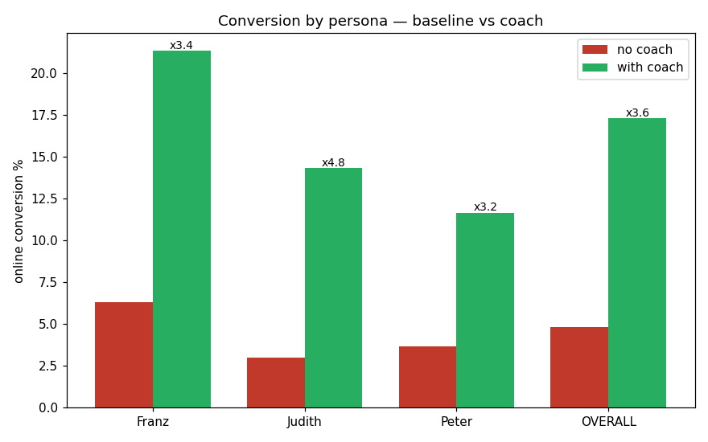
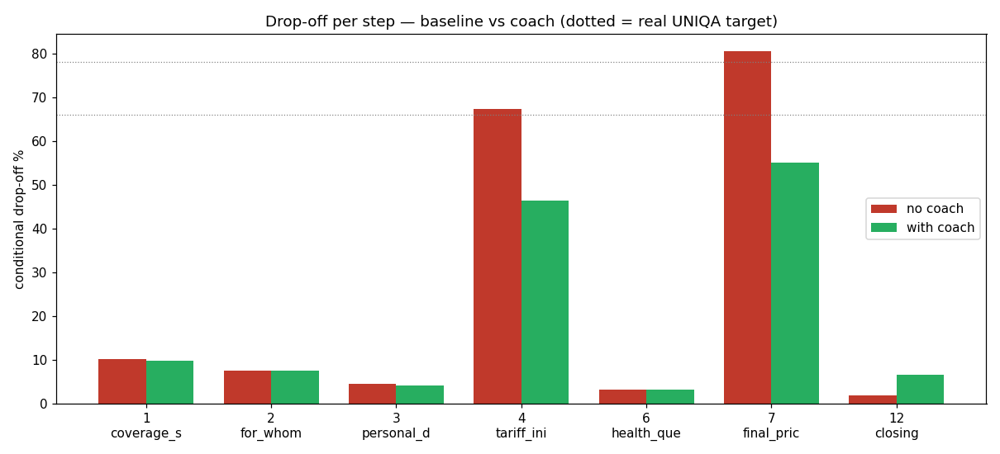
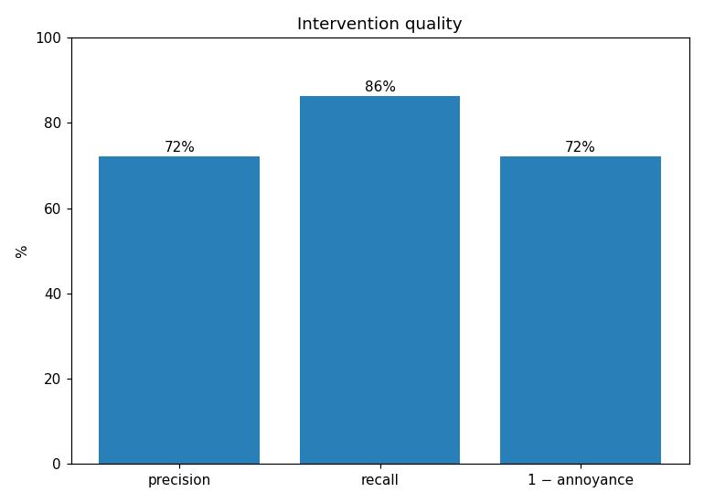
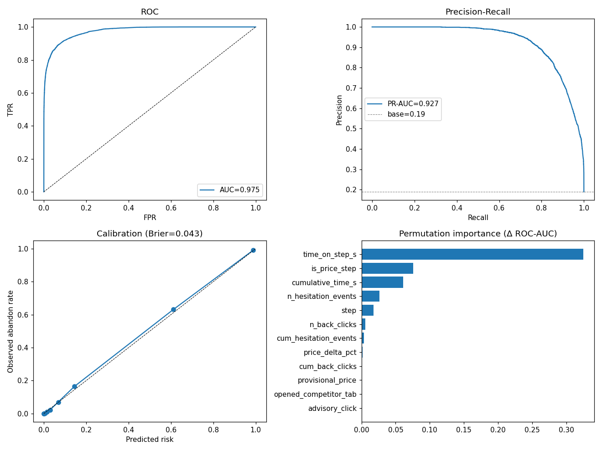

3.6×
online conversion uplift
UNIQA's online health-insurance calculator loses people at two price cliffs — 66% at the initial price, 78% at the final price. The Conversion Coach detects the moment of doubt from behavioural signals and fires a per-segment intervention to keep them converting online.
A thousand in-scope visitors start the private-doctor calculator. By the closing step only ~56 remain. The leaks aren't spread evenly — they're concentrated at the moment a price appears.
At step 4 (initial price) 66% of the surviving cohort drops. At step 7 (final price after the health questions) another 78% of who's left drops — often because the final price ticks up from the estimate with no clear explanation.
Survival math: 1,000 → ~340 → ~57 ≈ the ~5.6% baseline UNIQA reports. The coach's whole job is to widen those two bottlenecks without annoying the people who'd have stayed anyway.
Edit a persona .md and the simulated people change. Edit personas.js and the
coach's config changes. Nothing else hard-codes persona facts — so the demo can never drift from the
engine being judged.
A real LLM role-plays each persona through the funnel — 1 call = 1 full journey — recording behavioural signals in character.
A probabilistic funnel is calibrated to UNIQA's real numbers, emits labelled per-step rows, and trains a small classifier — the coach's brain.
funnel.py reproduces 66% / 78% / 5.6%HistGradientBoostingevaluate.py → the three judged dimensions
flowchart TB
subgraph SRC["📋 Source of truth"]
MD["franz.md · judith.md · peter.md"]
JS["personas.js
50/30/20 · 66/78 cliffs"]
end
subgraph GPU["🖥️ Stage 1 — GPU (A100 · vLLM)"]
SIM["persona_simulator.py"]
CSV["data_<persona>.csv"]
SIM --> CSV
end
subgraph CPU["💻 Stage 2 — CPU"]
FUNNEL["funnel.py
(66% / 78% / 5.6%)"]
BASE["baseline_steps.csv"]
TRAIN["train_coach.py"]
BRAIN["coach_model.pkl
the brain"]
EVAL["evaluate.py"]
FUNNEL --> BASE --> TRAIN --> BRAIN --> EVAL
FUNNEL --> EVAL
end
subgraph RT["🎯 Coach at runtime"]
DETECT["DETECT — when?
risk + rules + dropoff vigilance"]
DECIDE["DECIDE — how?
infer segment → best intervention"]
DETECT --> DECIDE
end
MD --> SIM
CSV -.calibrates ranges.-> FUNNEL
JS -.config.-> FUNNEL
JS -.config.-> DETECT
JS -.config.-> DECIDE
BRAIN --> DETECT
The three personas drop at different steps and respond to different interventions. Push an advisor on Franz and he closes the tab; pile more information on Peter and he freezes. Per-segment targeting beats a single unified nudge by construction.
"I want to buy insurance the way I buy everything else: online, fast, transparent. If a tariff says 'advisory required', I close the tab."
Final price (step 7)
The €68 estimate becomes €74 with no warning — feels deceived, bails.Push an advisor
response_model: advisor push = ×1.25 leave hazard — a backfire.Show the data — market comparison & price justification
"Optimal is below ~80% of comparable private-doctor tariffs.""I research things myself online — but for important decisions I want someone I can trust to confirm I'm making the right choice."
Initial price (step 4)
Slows down, hovers on unfamiliar terms, wonders why two tariffs are advisor-only.Reflexively suggest an advisor
A desperate handoff reads as pressure; phrasing matters.Term glossary & price reassurance keeps her online
"Quick glossary: refractive eye surgery = laser vision correction…""Just tell me what's right for me. I don't want a menu of three — I want a recommendation, or a person who'll handle it."
Early (steps 1–3)
Too many numbers, no "recommended for you" — overwhelmed before the price cliff.Add more information
market_comparison = ×1.15 hazard — more choice = more paralysis.Simplify, or offer a proactive callback
"Most people with your needs pick Optimal — one click to continue."The trained classifier outputs P(abandon at this step). The coach blends that with transparent hard rules, infers a coarse segment from behaviour (no privileged knowledge of the true persona), and fires the intervention documented as effective for that segment.
P(abandon) from the gradient-boosting brain, on signals observable at the moment.best_coach_interventions.Real paired trace (artifacts/qualitative_trace.txt) — baseline outcome vs coach outcome on the same pre-drawn journey:
Pick a persona and step through the 7-step funnel. Risk rises with hesitation; when it crosses the threshold (lowered at that segment's drop-off step) the coach fires its best intervention. Illustrative of the live demo's feel — the judged numbers come from the real engine below.
leonardo_sim/evaluate.py on held-out seed 99, not by this widget.
Held-out cohort: 300 journeys per persona, seed 99 (disjoint from training), identical journeys resolved
with vs without the coach (common random numbers), re-weighted to the 50/30/20 mix. Every number is read
live from artifacts/eval_metrics.json — none are hard-coded.
The coach cuts the conditional drop at both price cliffs while barely touching the low-friction steps.
| Metric | Baseline | With coach | Change |
|---|---|---|---|
| Overall online conversion | 4.8% | 17.3% | ×3.6 · +12.5 pts |
| Conditional drop @ step 4 (initial price) | 67.3% | 46.4% | −20.9 pts |
| Conditional drop @ step 7 (final price) | 80.4% | 55.1% | −25.3 pts |
| Trigger precision / recall | — | 72% / 87% | fires on real moments |
| Classifier ROC-AUC / PR-AUC | — | 0.975 / 0.927 | Brier 0.043 |




The full evaluation, assumptions and disclosures live in REPORT.md. The highlights:
Hospital path, "other persons", and the advisory-only tariffs (Opt.Plus / Premium) force a clean advisor route. It's counted as advisor_routed and reported separately — never as an online conversion. The coach routes them, it doesn't coach them.
The brief contradicts itself (contract spec: online only; persona matrix: handoffs also count). We use the stricter contract definition as the headline and track advisor routes separately — we did not silently pick the more favourable number.
Identical seeds for baseline vs coach (common random numbers), verified not assumed. Training seed 11, evaluation seed 99 (disjoint). Re-runs end-to-end on CPU in ~1 min via ./run.sh.
No real clickstream — the funnel is calibrated to UNIQA's published aggregates (66/78/5.6), and response efficacies (including the documented backfires) are synthetic and stated. The LLM run was a smoke-test-sized validation of the pipeline.
Detection is a trained HistGradientBoostingClassifier blended with transparent rules. The optional Phi-3 chat is not required — without it replies are instant and doc-grounded, and the decision logic is independent of any LLM call.
MIT licensed, public repo, no API keys or tokens in the repo or its git history. README + REPORT + requirements present; runs from a clean checkout.
run.sh builds a local pip venv (no conda solve) and runs anything. The web demo has two
tabs: a live click-through coach, and the real-engine evidence view.
| Concern | Where | Notes |
|---|---|---|
| Product / funnel facts | coach/config.py · personas.js | tariffs, 50/30/20 mix, 66/78 cliffs, 5.6% baseline |
| Per-step hazards (calibrated) | config.py BASE_HAZARD | shaped per archetype; verified by --calibrate |
| Behavioural signals | coach/signals.py | dwell / hesitation / back-clicks / competitor-tab from latent friction |
| Features (train == serve) | coach/features.py | single builder, no journey-outcome leakage |
| Detection thresholds | coach.py RISK_THRESHOLD · DROPOFF_VIGILANCE | per-step; lowered at the segment's drop-off step |
| Response model (synthetic) | coach/response_model.py | per-persona efficacy incl. backfires (Franz↔advisor, Peter↔more-info) |
| Scope routing | coach/funnel.py | hospital / "other persons" / Opt.Plus / Premium → advisor route = clean exit |